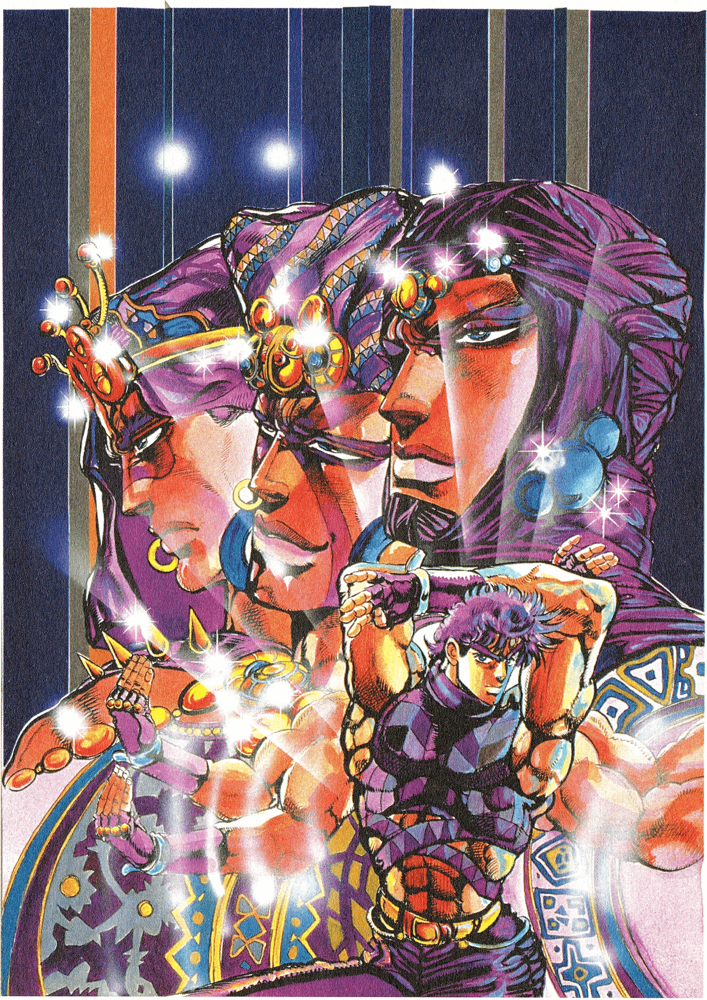
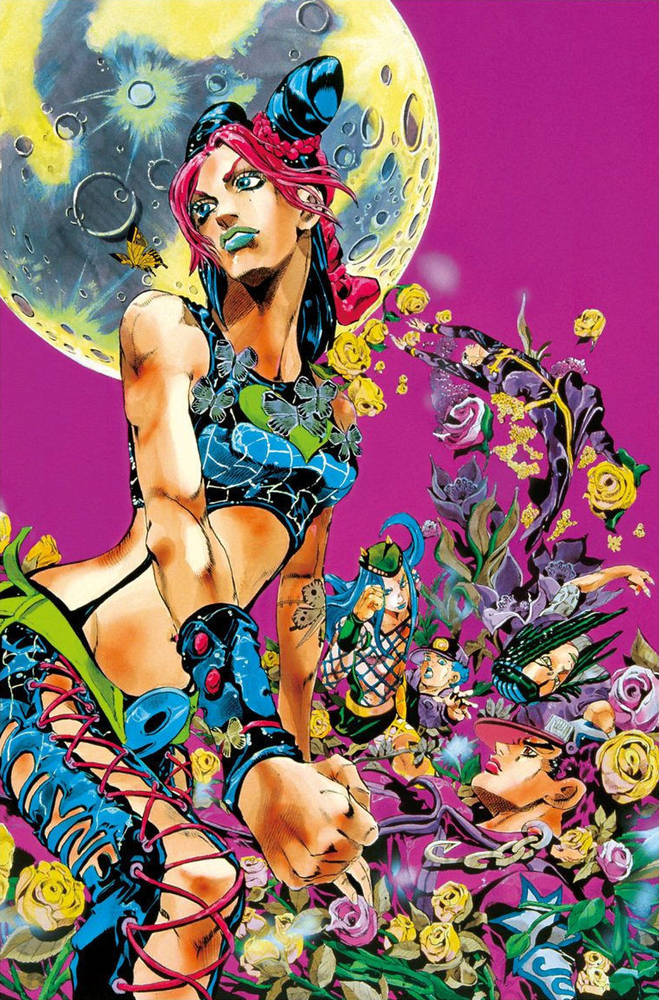
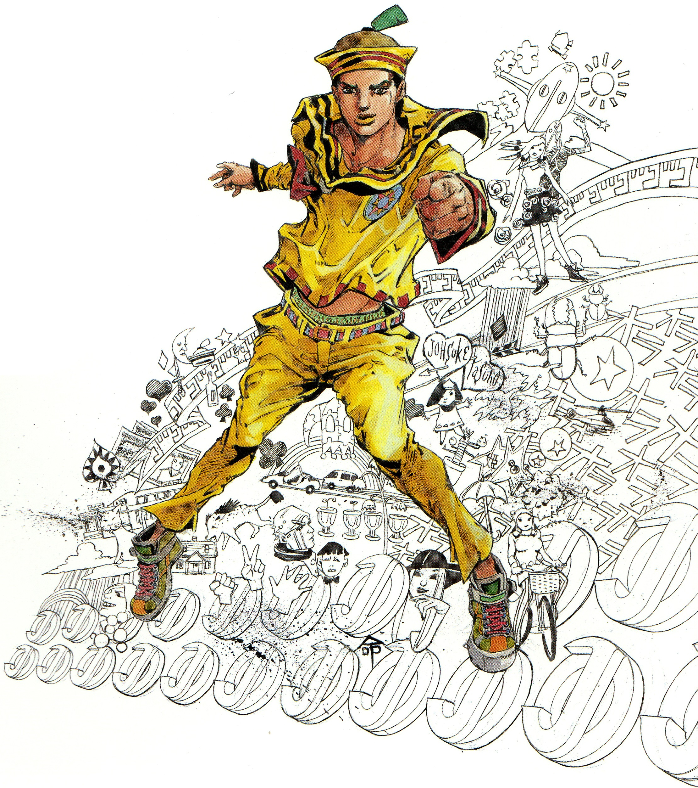

JoJo's Bizarre Adventure (JoJo no Kimyō na Bōken) (muitas vezes abreviado para JoJo ou abreviado como JJBA) é um mangá shonen e seinen escrito e ilustrado
por Hirohiko Araki. JoJo foi serializado na Weekly Shonen Jump de 1986 até 2004, quando então foi transferido para a revista mensal Seinen Ultra Jump, onde a história atual continua.
O gênero de JoJo abrange Ação, Aventura, Sobrenatural, Suspense, Comédia, Tragédia, Mistério, Slice of Life e Horror. Talvez seja mais popularmente conhecido
por seu fenômeno Stand; o arco Stardust Crusaders e seus personagens Dio Brando/DIO e Jotaro Kujo; a expressão expressiva de suas personalidades orgulhosas e glamorosas;
e suas centenas de referências nominais à música popular ocidental.
JoJo foi anteriormente a mais longa série de mangá da Shueisha a não receber uma adaptação animada para a televisão. No entanto, a série de TV oficial de anime finalmente
estreou em 6 de outubro de 2012 (separando as estreias de mangá e anime por vinte e cinco anos); projetado pelo estúdio de animação David Production.

A primeira parte, Phantom Blood, ambientada na Inglaterra em 1880, segue Jonathan Joestar enquanto ele amadurece e eventualmente combate seu irmão adotivo, o astuto e impiedoso Dio Brando,
que se torna um vampiro com a ajuda de uma antiga Máscara de Pedra. Jonathan é treinado por Will Anthonio Zeppeli na vibrante energia do Hamon, empunhada no corpo humano e transferida em
combate corpo a corpo, sendo esta a única maneira segura, além da luz do sol, de derrotar Vampiros e seus lacaios Zumbis.

A segunda parte, Battle Tendency, mostra o neto de Jonathan, Joseph Joestar, cruzando o mundo nos dias que antecederam a Segunda Guerra Mundial em 1938 para combater os Homens do Pilar,
uma antiga raça de seres hostis responsáveis pela criação da Máscara de Pedra. Assim como seu avô, Joseph passa por um extenuante treinamento Hamon ao lado de César Anthonio Zeppeli,
neto de Will, pela discreta Lisa Lisa e tenta proteger a Pedra Vermelha de Aja, uma joia procurada pelos Homens do Pilar para completar a Máscara de Pedra e conceder-lhes imunidade à Sol.

A terceira parte, Stardust Crusaders, se passa durante 1988-1989, quando o neto de Joseph, Jotaro Kujo, viaja junto com Joseph, Muhammad Avdol, Noriaki Kakyoin, Jean Pierre Polnareff e Iggy
de Tóquio até Cairo para lutar contra DIO que retornou das profundezas do mar e salvar sua mãe da influência mística de DIO. A partir de agora, aliados e vilões usam principalmente Stands, uma
representação geralmente humanóide do espírito de batalha da pessoa, que se tornou uma das características mais proeminentes da série.

A quarta parte Diamond is Unbreakable se passa na cidade fictícia de Morioh, no Japão, em 1999. Segue o filho ilegítimo de Joseph, Josuke Higashikata, enquanto ele conhece amigos e inimigos
entre uma série de novos usuários de Stand dentro da população de Morioh criados com os poderosos Arco e Flecha, dois itens que deram a DIO seu Stand. Ele, Okuyasu Nijimura, Koichi Hirose,
Jotaro Kujo e Rohan Kishibe eventualmente perseguem o assassino em série Yoshikage Kira.

Na quinta parte, Vento Aureo (também referida como Golden Wind), ambientada na Itália em 2001, o filho de DIO, Giorno Giovanna, luta para chegar ao topo da Passione, a gangue mais poderosa da
Itália, enquanto planeja derrubar o misterioso chefe da gangue para proteger a população civil do tráfico de drogas da quadrilha. Para fazer isso, ele coopera com o membro da gangue Bruno Bucciarati
e sua própria equipe composta por Leone Abbacchio, Guido Mista, Narancia Ghirga e Pannacotta Fugo, que têm a tarefa de proteger a filha do chefe, Trish Una, das equipes de assassinos La Squadra
Esecuzioni e Unità Speciale.

A sexta parte, Stone Ocean, se passa em 2011, quando a filha de Jotaro, Jolyne Cujoh, é acusada de assassinato e presa na Green Dolphin Street Prison. Jotaro então tem suas memórias e Stand
roubados pelo Stand Whitesnake após uma tentativa de libertar Jolyne. Ela então decide ficar presa para descobrir quem é o usuário de Whitesnake e o que ele planeja fazer com as memórias e
Stand de Jotaro. Ao longo de sua aventura, Jolyne ganha aliados em Emporio Alniño, Ermes Costello, Foo Fighters, Narciso Anasui e Weather Report.

Situado em 1890 nos Estados Unidos, Steel Ball Run segue uma corrida pelo continente dos Estados Unidos da América. A corrida é chamada de Corrida de Cavalos Steel Ball Run e tem o nome do
patrocinador, Steven Steel. Os protagonistas são Gyro Zeppeli, um mestre da técnica única de Spin buscando o prêmio em dinheiro e Johnny Joestar, um ex-jóquei paraplégico que busca curar suas
pernas através do Spin, ambos cooperando para vencer a corrida. Johnny e Gyro descobrem que a corrida é uma fachada do Presidente Funny Valentine para descobrir as poderosas e inestimáveis
relíquias de Jesus Cristo, eventualmente também caçando as referidas relíquias enquanto lutam contra os muitos agentes de Valentine.

Saltando para 2011, em JoJolion, a estudante universitária Yasuho Hirose descobre um homem amnésico provisoriamente chamado de "Josuke" em Morioh após o (então contemporâneo) terremoto do Grande
Leste do Japão. Ambos então decidem investigar a identidade passada de Josuke, inicialmente considerada a do médico do navio Yoshikage Kira, e as circunstâncias de sua presença na cidade, deixando-o
sob os cuidados da influente Família Higashikata, enquanto ambos vão descobrindo os segredos mais sombrios da família e um comércio de drogas envolvendo uma misteriosa raça de seres humanóides e uma
fruta igualmente misteriosa.